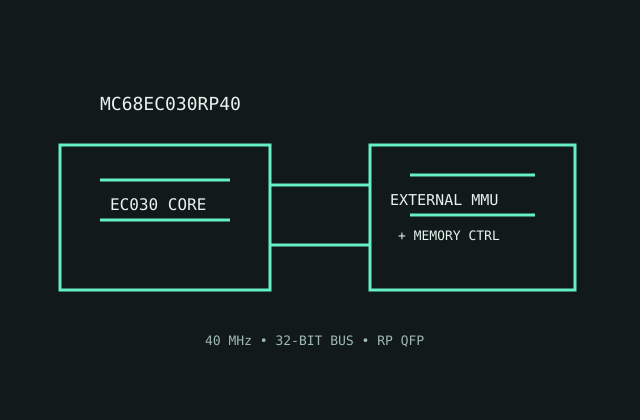

[ MOTOROLA 68000 FAMILY // EMBEDDED-CONTROL 68030 ]
Motorola MC68EC030RP40
A 40 MHz EC030 combines the 68030 execution core with embedded-focused feature reductions for systems that supply their own memory-management hardware.

MODEL IDENTIFICATION: MC68EC030RP40, 40 MHz EC030 plastic QFP variant. EC feature omissions make it electrically and functionally distinct from the full MC68030.
Recorded specifications
| Model | MC68EC030RP40. |
|---|---|
| Generation | Embedded-control derivative of the third-generation 68000 family. |
| Architecture / cores | Motorola 68030-compatible CISC ISA; one 32-bit core; EC variant omits the full on-chip MMU. |
| Frequency / cache | 40 MHz speed grade; 256-byte instruction cache and 256-byte data cache. |
| Package / socket | RP plastic quad flat pack (QFP); use the matching EC030 PCB footprint and pin assignment from the package drawing. |
| Power | 5 V nominal supply. No modern TDP rating; determine regulator and cooling from the exact 40 MHz ordering-code electrical limits. |
| Memory / bus | 32-bit external data/address bus; external memory controller and any required MMU are system components. |
| Board compatibility | Requires a 40 MHz EC030-aware board and RP QFP footprint. A full MC68030 board may expect an integrated MMU and different bus control behavior. |
Compatibility notes
- Plan address translation outside the CPU if the software requires virtual memory.
- Verify the EC030 manual's pinout, cache behavior and bus-cycle details against board logic.
- Do not assume a 40 MHz part is supported by a board whose oscillator, timing or cache design targets another grade.
Sources & further reading
- Motorola MC68EC030 User's Manual (Bitsavers technical archive)Manufacturer manual archive for EC030 system interface, caches and reduced feature set.
- Motorola MC68030 family data sheet (Bitsavers)Manufacturer data sheet archive for family electrical/package conventions; use the EC-specific ordering and limits.